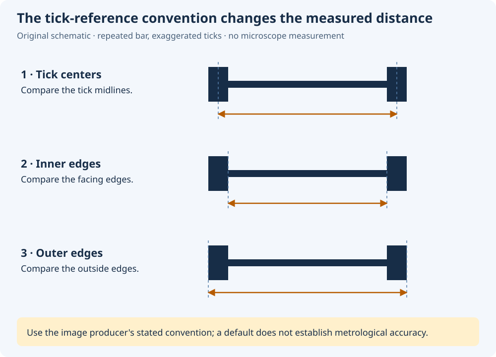

Preparation manuscript · calibration concepts
Choose a calibration that matches the source
Pixel coordinates, plotted scientific axes and a physical scale bar express different information. A calibration connects them only under stated geometric and scientific assumptions.
This explanation follows the deposited dev109 manual and is preparatory material. Final controls, limitations and examples must match the actual unchanged vendor version accepted in dev110. The diagram and arithmetic example below are illustrative; neither is an application measurement or actual Dataset Preview.
Distinguish three calibration tasks
| Source/task | Information supplied | Important limit |
|---|---|---|
| Full-image pixel calibration | The original raster's pixel-center coordinates and an explicit Y direction. | Pixels alone do not establish a physical length or a plotted scientific axis. |
| Four-point plot calibration | A mapping from a chosen image quadrilateral to declared axis values, units and scales. | A projective mapping does not correct arbitrary lens, scanning or non-planar distortion. |
| Physical scale-bar calibration | A known physical length associated with deliberately selected raster endpoints. | Uniform physical scaling assumes compatible raster geometry; it does not establish isotropy or perspective correctness from the bar alone. |
Keep the source image identity and exact bytes with the calibration. Changing the raster can invalidate a previously meaningful mapping even if the filename or visible label remains familiar.
For plotted axes, preserve labels, units, semantic meaning, limits and scale choices explicitly. A logarithmic scientific axis requires a positive domain; a negative or zero limit cannot be made valid by changing its displayed label. The projective image mapping and the logarithmic scientific-axis mapping have different roles.
Pixel-center coordinates use W−1 and H−1 spans
For the documented full-image convention, a raster with width W and height H has corner pixel centers at coordinates 0 through W−1 and 0 through H−1. The distance between first and last centers is therefore W−1 or H−1 pixel intervals.
This is a center-to-center coordinate span. It is distinct from the full extent of W pixel cells. Preserve the convention used by the actual calibration rather than silently changing between those interpretations.
Choose image-downward or Cartesian-upward Y according to the intended coordinate interpretation. Zoom and pan affect presentation; they do not change original raster positions or make a new physical scale. The independent reference-coordinate illustration shows why a downward image movement can correspond to a decreasing scientific value.
Use a scale bar deliberately
If a known physical length L spans an endpoint distance d in original raster pixels, the uniform scale factor is L/d physical units per pixel. The documented endpoint distance is Euclidean; a rotated bar is not measured by its horizontal projection alone.
Inspect the actual detected or manually selected endpoints before applying a scale. A high-contrast line may be an annotation or the wrong segment. Detection success does not establish that the intended physical reference has been identified.

A center-to-center default is a geometric choice, not a guarantee about an instrument's exported annotation. Inner-to-inner and outer-to-outer references have different lengths. Preserve the convention actually selected and keep an unspecified historical convention unknown.
Illustrative arithmetic: for a declared 10 µm reference spanning 152 original pixels in a 720 × 560 raster, the factor is 10/152 µm per pixel. The corner-center spans become 719 × 10/152 ≈ 47.3026 µm and 559 × 10/152 ≈ 36.7763 µm. These numbers follow the stated example assumptions; they are not measured specimen dimensions or GX-TXT execution results.
A single uniform scale assumes equal physical scale along the relevant image directions. It does not compensate for distorted or non-square source pixels, perspective effects, a wrong physical annotation or instrument calibration error. Scale-bar length and endpoint localization also need their own appropriate uncertainty interpretation; they are not interchangeable with generic homography-corner uncertainties.
A fitted corner is different from an independent check
Four calibration corners constrain a projective mapping. Very small residuals at exactly those fitted points can coexist with a wrong axis assignment, a mistaken corner location or a distorted source. They do not independently establish physical accuracy.
Inspect a known coordinate elsewhere in the image when a trustworthy reference is available. Retain the reference source, calculated values, units and the residual convention used by the actual tool. Verification is diagnostic; it must not silently change the calibration.
A small verification residual at one location does not describe uncertainty everywhere. A repeated manual calibration can reveal variability in the procedure while sharing source and systematic effects. Keep independent reference evidence, descriptive calibration spread and explicitly justified measurement uncertainty distinct.
Before publication, identify the active mapping, which measurements are accepted and which are selected for output. The publication explanation describes those separate roles. Final tutorials will show the real unchanged vendor GUI, actual source/calibration identities and the resulting canonical Dataset/Preview workflow.